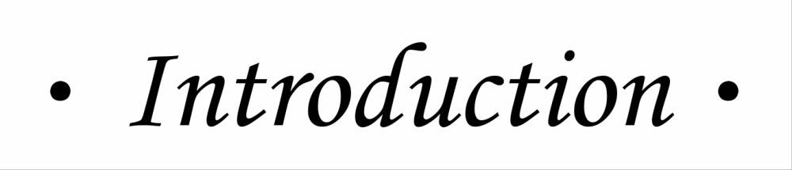
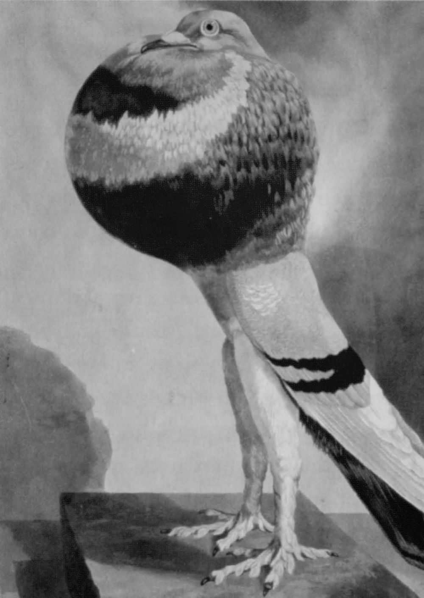
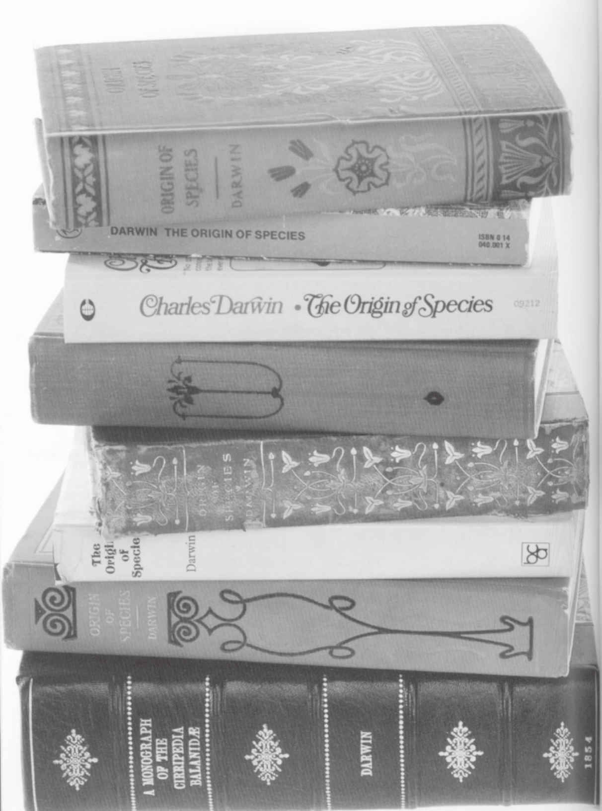

绪论

本书的目的并不是要描述人所饲养的动物和所栽培的植物的一切族（race）；即使我拥有必需的知识，如此巨大的工作在这里也是不必要的。我的意图是：在各个物种的标题下仅仅提供出我所能搜集到或观察到的事实，来说明动物和植物在人的干预下所经历过的或者与变异的一般原理有关的变化量和变化性质。
对于仔细读过《物种起源》的人们，这个“绪论”将是多余的。因为我在该书中曾提过我不久会发表书中结论所依据的事实，所以在这里我要请读者原谅我由于长期的疾病而迟迟发表这一著作。

突胸鸽。
本书的目的并不是要描述人所饲养的动物和所栽培的植物的一切族（race）；即使我拥有必需的知识，如此巨大的工作在这里也是不必要的。我的意图是：在各个物种的标题下仅仅提供出我所能搜集到或观察到的事实，来说明动物和植物在人的干预下所经历过的或者与变异的一般原理有关的变化量和变化性质。只在一个例子中，即在家鸽的例子中，我要充分地描述所有主要的品种，它们的历史、它们之间的差异量和差异性质以及它们所赖以形成的大概步骤。正如以后我们会看到的，我选择这个例子是因为这个材料比任何其他例子的材料更好；对于一个例子加以充分描述，事实上就会说明一切其他例子。不过对于家养的兔、鸡和鸭我还要进行相当充分地描述。
本书所讨论的问题是如此相互联系着，所以决定怎样最好地安排它们是没有什么困难的。我决定在第一部分中在各种动物和植物的标题下提出大量的事实，其中有些事实可能起初显得同我们的问题没有多大关系；在第二部分中则作一般的讨论。无论何时，我感到有必要举出大批细节来支持任何主张或结论时，就采用小体字印出。我想，读者会感到这一种办法是方便的，因为如果他不怀疑结论或者不关心细节，他能够容易地略过它们；可是请允许我说，用小体字印出的有些讨论还是值得注意的，至少从专门的博物学者的眼光看来是如此。
对于没有阅读过“自然选择”[1]的人们，如果我在这里就这整个问题以及它同物种起源的关系作一简要的叙述，可能是有用的[2]。因为不可能在本书里避开将来一些著作中将要加以充分讨论的许多论点不谈，所以这样做就更有必要了。
从遥远的时期起，在世界的很多地区，人早就把许多动物和植物饲养起来或者栽培起来了。人没有改变绝对的生活条件的力量；他不能改变任何地区的气候；他没有增加新的元素到土壤里去；但是他能把一种动物或植物从一种气候或土壤移到另一种气候或土壤，并且把它在自然状况下所不赖以为生的食物给它。说人“干预自然”并且引起变异，这是一种错误。如果一个人把一块铁放在硫酸里，严格地不能说他造成了硫酸铁，他所做的只是让它们的选择的亲和性（elective affinities）发生作用。如果生物不具有变异的内在倾向，人大概什么也不会做成的[3]。他无意地把他的动物和植物暴露在各种不同的生活条件下，变异就发生了；这，他甚至不能够阻止或抑制。考虑一下一种简单的情形吧：一种植物长期以来被栽培在它的原产地，因此没有遭遇到气候的任何变化。它在某种程度上被保护着不同其他种类植物的根相竞争；它一般被栽培在施过肥的土壤上，不过那种土壤并不比许多冲积平原的土壤来得肥沃；但最后，它遭遇了生活条件的变化，因为它有时被栽培在这一地区，有时被栽培在另一地区的不同土壤中。在这样的情况下，几乎不能举出一种植物，甚至以最粗糙方式栽培的植物，不曾产生过若干新品种。在这地球所经历过的许多变化中，并且在植物从一陆地或从一岛屿到不同物种所居住的另一陆地或另一岛屿的自然的迁徙中，很难认为这等植物不会经常地遭遇到同几乎必然引起栽培植物变异的条件变化相似的条件变化。毫无疑问，人选择了变异着的个体，播种它们的种子，再选择它们的变异着的后代。但是人所借以工作的最初的变异，是由生活条件的轻微变化所引起的，这种变化一定经常在自然界里发生。因此，可以说人在进行着一种规模巨大的实验；这种实验就是自然界在悠长时间里曾经不断地进行着的。由此可见，培育驯化的原理对于我们是重要的。这主要的结果是，饲养和栽培的生物大大地变异了，而且这些变异是遗传的。这显然是某些少数博物学者长久以来相信物种在自然状况下发生变化的主要原因之一。
我将在本书就我的材料所许可的范围对于家养下的变异的整个问题进行充分的讨论。我们希望由此对变异的原因——对支配变异的法则，例如气候和食物的直接作用、使用和不使用的影响、相关生长的影响——以及对家养生物可能发生的变化量，得到一些哪怕是微小的光明。我们将对遗传的法则、不同品种的杂交后果的法则以及生物离开了它们自然的生活条件所经常发生的不育性和过分近亲交配所发生的不育性，多少有所了解。在这一考察中，我们将看到“选择”原理是高度重要的。虽然人并不引起变异，甚至也不能够阻止变异，但人能够用他挑选的任何方法把自然的手所交给他的变异加以选择、保存和累积；而且由此他肯定地还能产生出巨大的结果。选择可以有计划地和有目的地进行，也可以无意识地和无目的地进行。人可以按照预先提出的概念，以改良和改变品种的明确目的来选择和保存每一延续性变异；并且由于把没有训练的眼睛所觉察不到的、经常是如此轻微的变异这样地累积起来，他曾经产生了可惊的变化和改进。还能够清楚地阐明，人纵使没有改良品种的任何意图或思想，但依靠在相连续的世代中保存他最珍视的个体和毁灭最没有价值的个体，也会缓慢地然而是确定地引起重大的变化。因为人的意志是这样发生作用的，所以我们便能理解家养品种怎样会对他的需要和嗜好表现出适应。我们还能进一步理解家养动物和栽培植物的族同自然的物种相比较，怎样会经常显示出一种异常的性状；因为它们的变化不是适于它们自己的利益而是适于人的利益的。
如果时间和健康许可，我将在另一著作里讨论生物在自然状况下的变异；这就是动物和植物所表现出来的个体差异以及被博物学者们列为变种或地理族的、比较稍为大些的并且一般是遗传的差异。我们将会看到，因为那些特征较不显著的类型有时已经得到命名，所以要把族和亚种区别开来是多么困难，毋宁说是往往多么不可能；亚种和真实物种之间的情形也这样。我将进一步试图阐明，普通的、分布广泛的物种，即可以被叫做优势的物种，最常发生变异；总是大的和繁荣的属含有最大数目的变异着的物种。正如我们将会看到的，变种可以被正当地叫做初生物种（incipient species）。
但是可以指出，假定生物在自然状况下呈现出某些变种——它们的体制在某些程度上是可塑的；假定许多动物和植物在家养下大大地发生了变异，并且假定人依靠他的选择力是曾经把这等变异继续积累到他制造出特征强烈显著而坚定遗传的族；假定了所有这一切，还是可以发问：物种在自然状况下是怎样产生的？自然界的变种之间的差异是轻微的；然而同一属的物种之间的差异是相当大的，不同属的物种之间的差异是巨大的。这些较小的差异怎样会增大成较大的差异呢？变种，即我称为初生物种的，怎样会转化成真实的、界限分明的物种呢？每一个新的物种怎样会适应了周围的自然条件并且怎样适应了同它有任何关系的其他生物类型呢？在我们的周围我们看到无数的、曾经正当地引起了每一观察者的最高赞美的适应和装置。例如，有一种瘿蚊（Cecidomyia）[4]，它把卵产在一种玄参属（Scrophularia）植物的雄蕊内，并且分泌出一种毒质以产生出为幼虫所吃的树瘿；但是另有一种昆虫（Misocampus），它把卵产在那树瘿内的幼虫的体内，这样以活的猎物为营养；结果是一种膜翅类的昆虫依赖于一种双翅类的昆虫，这双翅类昆虫又依赖于它在一定植物的一定器官里产生怪异的生长物的能力。情形就是这样，这以比较显著或较不显著的方式表现出来，也见于成千成万的例子中，也见于最低等的和最高等的自然产物里。
变种转化成物种——这就是说，作为变种的特征的轻微差异增大成作为物种和属的特征的较为巨大的差异，包括每一生物对于其复杂的有机生活条件和无机生活条件的可赞美的适应在内——这一问题已经在我的《物种起源》里简要地讨论过了。在那书里阐明了，一切生物毫无例外地都有以如此高比率进行增加的倾向，以致没有一个地区，没有一个地点，能够容纳单独一对生物的经过一定代数以后的后代，甚至全地表和全海洋也容纳不下它们。这不可避免的结果就是经常发生的“生存斗争”。已经老实地说过，整个自然界都在战争中；最强的终于得胜，最弱的则不免于失败；我们还很知道无数的类型已经在这地球面上消逝不见了。那么，如果生物在自然状况下由于周围条件的变化（在这方面我们有丰富的地质学证据），或由于其他原因，即使轻微程度地发生变异；如果在悠长的岁月里对于处在极端复杂而变化的生活关系中的任何生物有任何益处的、能遗传的变异曾经发生；而如果有利的变异从未发生，这将是奇怪的事，因为人为了他自己的利益或嗜好曾经利用过多么多的已经发生了的有利变异；如果上述的事情确曾发生，而且我不知道对它们发生的可能性，怎么能够怀疑，那么，剧烈的、经常发生的生存斗争就会决定那些不论如何轻微的有利变异必被保存或选择出来，那些不利变异必被消灭。
我曾把构造上、体制上或本能上具有任何优越性的变种在生活战场中被保存下来，叫做“自然选择”；赫伯特·斯宾塞（Herbert Spencer）先生用“最适者生存”很好地表示了同一概念。“自然选择”在某些方面是一个不好的用语，因为它似乎有着自觉选择的含义；不过稍为熟悉以后，这就会被置之度外了。没有人反对化学家说“选择的亲和力”（elective affinity）；一种酸同一种碱结合肯定不会比生活条件决定一种新类型是否被选择或保存有更大的选择作用。这个用语，就它把家养族通过人的选择力量而被育成同变种在自然状况下得到自然的保存这两件事联系起来而言，是一个好的用语。为了简便起见，我有时把自然选择说得好像是一种智慧的力量——有如天文学家说引力管理着星体的运行，或农学家说人运用他的选择力量创造出家养族。在这种场合里同在另一种场合里一样[5]，没有变异，选择不能做出什么，而变异则以某种方式取决于周围环境对于生物的作用。还有，我常常把“自然”这个词儿拟人化了；因为我感到很难避免这种含糊处；但我认为“自然这一用语只是意味着许多自然法则的综合作用及其产物——而法则只是意味着确定了的事物的因果关系”。
许多事实已经表明，每一地域由于它的居住者在构造上和体制上的巨大分歧或歧异才能支持最大量的生命。我们也已经看到，新类型通过自然选择而不断产生（这意味着每一新变种比其他变种多少有些优越性），这无可避免地导致了较老的或改进较少的类型的绝灭。较老的或改进较少的类型在构造上以及在系统上差不多一定是介于最后产生的类型和它们的原始亲种之间的。现在，我们假定某一个物体产生了两个或更多的变种，这些变种在时间的历程中又产生了其他变种，由构造分歧所引起的利益一般会导致分歧最大的变种的保存；这样，作为变种特征的较小差异就增大成作为物种特征的较大差异，并由于较老的中间类型的绝灭，新种就作为界限分明的对象而告成了。这样，我们又将了解，借着所谓的自然分类法，生物怎样能够被分类在不同的类群中——即物种在属下，属在科下。
因为每一地区的生物由于它们高度的生殖率，就可以都在努力增加数目；因为每一类型同许多其他类型在生活斗争中进行竞争——因为任何一个类型被毁灭了，它的位置就会被其他类型所夺取；因为体制的每一部分有时会轻微地发生变异；并且因为自然选择唯有通过保存有利于生物能生活在异常复杂的条件下的变异才发生作用，所以这样产生出来的装置和适应性在数目、独特性和完善化方面都是没有止境的。一种动物或一种植物在其构造和习性上可以同许多其他动物和植物以及同其住处的自然条件，缓慢地发生了最错综的关系。体制上的变异在某些情形下会受到习性（即器官的使用和不使用）的帮助，而它们又会被周围自然条件的直接作用以及相关生长所支配。
依据这里简要叙述的原理，每一生物体内并没有使自己在体制等级中前进的内在的或必需的倾向。我们几乎不能不承认身体各部或器官为了不同机能而发生的专业化或分化是向前发展的最好的或甚至唯一的标准；因为依靠这种分工，身心的每一机能才会更好地运行。因为自然选择唯有通过构造上有利变异的保存才发生作用，又因为每一地域的生活条件由于居住在那里的不同类型的数目增加以及由于大部分的这些类型获得了愈来愈完善的构造而一般变得愈来愈复杂，所以我们可以确信：整个说来，体制是进步了。虽然如此，适于在很简单的生活条件下生活的、很简单的类型大概还可以在无限长的年代里保持不变或者没有改进；因为，譬如说，一种浸液小虫或肠寄生虫如果变得有高度的体制，会得到什么好处呢？甚至高等类群的成员也可以变得适于比较简单的生活条件，而这显然是常常发生的；在这种情况下，自然选择就有使体制简化或者退化的倾向，因为复杂的机构对于简单的活动是无用的或者甚至是有害的。
对于反对“自然选择”学说的诸论点，在我的《物种起源》一书中已经就其篇幅所许可的范围按照以下的项目讨论过了：在理解很简单的器官如何由细小而级进的步骤转化成高度完善而复杂的器官方面所存在的困难点；有关“本能”的奇异事实；有关“杂种性”（hybridity）的整个问题；最后，有关在已知的地层中联结一切近似物种的无数环节的缺如。虽然这些难点的一部分具有很大的分量，我们将看到大多数都可以按照自然选择学说得到解释的，而不按照自然选择学说就无法解释了。
在科学研究中，是允许创造任何假说的，而且，如果它说明了大量的、独立的各类事实，它就上升到富有根据的学说的等级。以太（ether）的波动，甚至它的存在都是假设的，可是大家现在都接受光的波动学说。可以把自然选择的原理看做只是一种假说，但是它由于下述各点在某种程度上便成为有根据的了：我们确实知道生物在自然状况下有变异——我们确实知道有生存斗争以及因此几乎不可避免会引起有利变异的保存——并且家养族是按照相似的方式形成的。现在可以把这个假说试验一下——依我看来，这是考虑整个问题的唯一公正的、合法的方式——看看它是否说明了若干类大而独立的事实；例如生物在地质上的连续，它们过去和现在的分布情况，它们的相互的亲缘关系和同源。如果自然选择的原理确实说明了这些以及其他大量的事实，它就应该被接受。按照每一物种分别创造出来的通常观点，这些事实的任何一件都得不到科学的解释。我们只能说“造物主”高兴命令世界上的过去和现在的生物以某种次序在某种地区出现；只能说“他”使它们印上了最奇异的类似，并且按照类群下还有类群的方式把它们加以分类。但是我们从这样的叙述里得不到新的知识，我们并没有把事实同法则联结起来；我们什么也没有说明。
起初，就是对像这样的大量事实的考虑引起了我来研究现在这个问题。当我在“贝格尔号”（H．M．S．Beagle）的航行中探访离开南美约500海里的太平洋中的加拉帕戈斯群岛（Galapagos Archipelago）的时候，我发现我的周围尽是在世界别处没有的鸟类、爬行类和植物的特殊物种。可是它们又都几乎带着美洲的印记。在效舌（mockingthrush）的歌声中，在食尸鹰（carrion-hawk）的刺耳的叫声中，在大烛台似的仙人掌（opuntias）中，我清楚地觉察到了美洲的邻近，虽然有那么多海里路的海洋把这些岛屿从大陆隔开，而且在它们的地质构成上和气候上也有很大的差别。更加值得惊奇的是这样一个事实：在这小群岛中的每一个分开的岛屿上，大部分生物都是不相同的物种，虽然它们大多数都是彼此密切近似的。这群岛具有无数的火山口和裸露的熔岩流，看来它是最近形成的；因此，我幻想我自己看见了创造的动作。我常常问自己，这许多奇怪的动物和植物是怎样产生出来的：最简单的答案似乎是这若干岛上的生物相互传自共同的祖先，而在相传的历程中发生了变异；并且这群岛的一切生物都是从最近陆地、即美洲的生物传下来的，移住者大概会自然地来自那个地方。但是如何才能达到变异的必需程度，对我来说曾经是一个长期不能解决的问题，如果我不去研究家养生物并且由此获得了关于选择力量的正确概念，它将永远成为不能解释的。我一旦充分理解了这个概念，在阅读了马尔萨斯（Malthus）的《人口论》之后，我便看到“自然选择”是一切生物迅速增加的无可避免的结果；因为在此以前我对于动物的习性已经有过长期的研究，在理解生存斗争上便有所准备了。
在探访加拉帕戈斯群岛前，我在美洲两岸从北向南的旅行中已经采集了许多动物，并且在每一地方，不论其生活条件有多么不同，美洲的类型总是可以遇到的——同一特殊属的物种代替了另一物种。例如在登上科迪勒拉（Cordilleras）时，或穿过茂密的热带森林时，或在美洲的淡水中采集时，情形都是这样。以后，我探访了其他地方，那里在一切生活条件上同南美的某些部分的相似远不是该大陆的不同部分彼此之间的相似所可比拟的；可是在这些地方，例如在澳洲或南非，旅行者不能不被它们的生物的全然不同所打动。我再一次地不得不考虑到，只用南美洲的早期生物的起源共同性大概就可以说明美洲类型为什么在那整个巨大的地域里占有广泛的优势。
一个人用自己的手发掘出灭绝的、巨大的四脚兽的骨，就把物种连续性的整个问题生动地提到他的面前来；而我就在南美洲找到了同被覆在现存矮小犰狳（armadillo）身上的完全一样而不过是非常巨大的、大块镶嵌式的甲胄；我找到了像现存树獭（sloth）的牙齿那样的巨齿以及像豚鼠的骨那样的骨。近似类型的连续性，以前在澳洲也有过相似的情况。于是，在这里我们看到了在同一地域里同一模式在时间上和空间上好像是由于传续而得到了优势；不论在上述哪一种情形下，生活条件的相似性都不足以说明生物类型的相似性。密切相连续的地层里的化石遗物在构造上的密切近似，是大家都知道的事；而我们能够立刻理解这种事实，如果说它们的密切近似是由于传续。同一属的许多不同物种在一长系列地层中的延续似乎是不间断的，即连续的。新的物种一个又一个地逐渐出现。古代的灭绝了的生物类型在性状上常常是中间的，恰如一种死了的语言的字同由它派生出来的语言（即活语言）的关系一样。所有这些事实，依我看来，都指出家系变化是新种产生的方法。
世界上过去的和现在的无数生物都被最独特的、最复杂的亲缘关系联结在一起，并且能够按照类群下有类群的方式对它们加以分类，有如变种可以被列在物种下、亚变种可以被列在变种下一样，只是其差异的程度大得多吧了。这些复杂的亲缘关系和分类规则，根据家系变化学说结合着引起性状分歧和中间类型灭绝的自然选择的原理，就会得到合理的解释。按照分别创造的理论，人的手、狗的脚、蝙蝠的翅膀和海豹的前肢的相似的型式是多么不可理解呀！按照对同一祖先的分歧后代中的连续而微小的变异进行自然选择的原理，其解释又是多么简单呀！同样的情形也见于同一动物或植物的某些部分或器官，例如，螃蟹的颚和腿，花的花萼、雄蕊和雌蕊。随着时间的行进生物遭遇了许多变化，在这等变化中某些器官或部分有时最初是变得没有什么用处，终于变成为多余的了；而这些部分还在痕迹的和无用的状态中被保存着，根据家系变化学说这是可以理解的。可以阐明，构造的变异一般是在祖先表现各个连续变异的同一年龄中被遗传给后代；还可以进一步阐明，变异的发生一般不是在胚胎发育的很早时期，依据这两个原理，我们便能理解整个博物学（natural history）中的最奇异的事实，即同一大纲中胚胎的密切近似——例如，哺乳类、鸟类、爬行类和鱼类的胚胎的近似。
使我相信依据自然选择的家系变化学说基本上是真实的正是对于这般事实的考虑和解释。这些事实按照“独立创造”的学说直到今日还没有得到解释；它们不能被归纳在单独一个观点下，而每一事实只能被看做是最终的事实。因为生命在这地球上的最初起源以及每一个体的生命的继续的问题现在还完全处在科学范围以外，我并不希望很强调最早创造的是少数类型或单独一个类型那种观点比在无数时期里必然会创造无数奇迹的观点更加简明；虽然这个比较简明的观点同莫培督（Maupertuis）的“最小作用原理”（least action）的哲学格言很相吻合。
在考虑到自然选择学说的应用范围可以扩展到何处的时候——这就是说，在确定这世界上的生物是从多少祖先传下来的时候，我们可以作出这样的结论：至少，同一纲的一切成员是从单一祖先传下来的。许多生物之所以被归入到同一纲内，是因为不管它们的生活习性如何，它们都在构造上表现出同一基本的模式，而且还因为它们相互之间的差异渐次增减。还有，在大多数场合里可以阐明同一纲的成员在早期的胚胎阶段中是密切相似的。按照它们从一个共同类型传下来的信念，这些事实都能得到解释；因此可以稳妥地承认同一纲的一切成员都是从同一祖先传下来的。但是因为完全不同纲的一些成员在构造上多少有些共同之处，而且在体制上有很多共同之处，类比之法就会引导我们前进一步，而推想一切生物大概都是从单一原始型传下来的。
我希望读者在对自然选择学说作出任何最后的、敌对的结论以前，先停下来想一想。为了对这整个问题有一概括的认识，读者可以参阅我的《物种起源》；但是他必须信赖该书中的许多叙述。在考虑自然选择学说时，他一定会遇到严重的难点，不过这些难点主要是关于我们显然无所知的那些问题——例如，地质记录的完全程度、分布的方法、器官过渡的可能性，等等；而且我们还不知道我们无知到怎样的程度。如果我们比一般所设想的更为无知，这些难点大部分就完全消失了。让读者仔细想一想用一个新观点来考虑整大类事实的难处吧。让他注意一下莱伊尔的关于地球表面现今逐渐进行变化的崇高观点如何缓慢地然而确实地被认为足以说明我们所能看到的地球的过去历史吧。自然选择在现在似乎多少是在发生作用的；但是我对于这个学说的真实性则信而不疑，因为它把许多显然独立的诸类事实归结在一个观点下，并且提出了合理的解释[6]。

不同版本的《物种起源》
[1] 指《物种起源》一书。——译者注
[2] 对于仔细读过《物种起源》的人们，这个“绪论”将是多余的。因为我在该书中曾提过我不久会发表书中结论所依据的事实，所以在这里我要请读者原谅我由于长期的疾病而迟迟发表这一著作。
[3] 普谢（M．Pouchet）最近主张家养下的变异对于物种的自然变异并没有投射任何光明（《生物族的多样性》，Plurality of Races，英译本，1864年，第83页及其他）。我还不能看出他的论点有什么力量，更精确地说，我看不出他的上述的断言有什么力量。
[4] 杜福（Léon Dufour），《自然科学年报》（Annales des Seienc．Nat．）（第三辑，动物学），第五卷，第6页。
[5] 指人工选择和自然选择。——译者注
[6] 在研究本书和我的其他著作所包含的若干问题时，我曾经不断地向许多动物学家、植物学家、地质学家、动物饲养家和园艺家要过材料，而且我一向从他们那里得到了最慷慨的帮助。没有这种帮助，我所能做的将很有限。我曾经不断地向外国人、向英国商人和住在远地的政府官员要过材料和标本，除了很少的例外，我都得到了迅速的、慷慨的和有价值的帮助。我深深地感谢帮助我的这许多人，并且我相信他们会同样高兴地帮助其他从事任何科学研究的人。